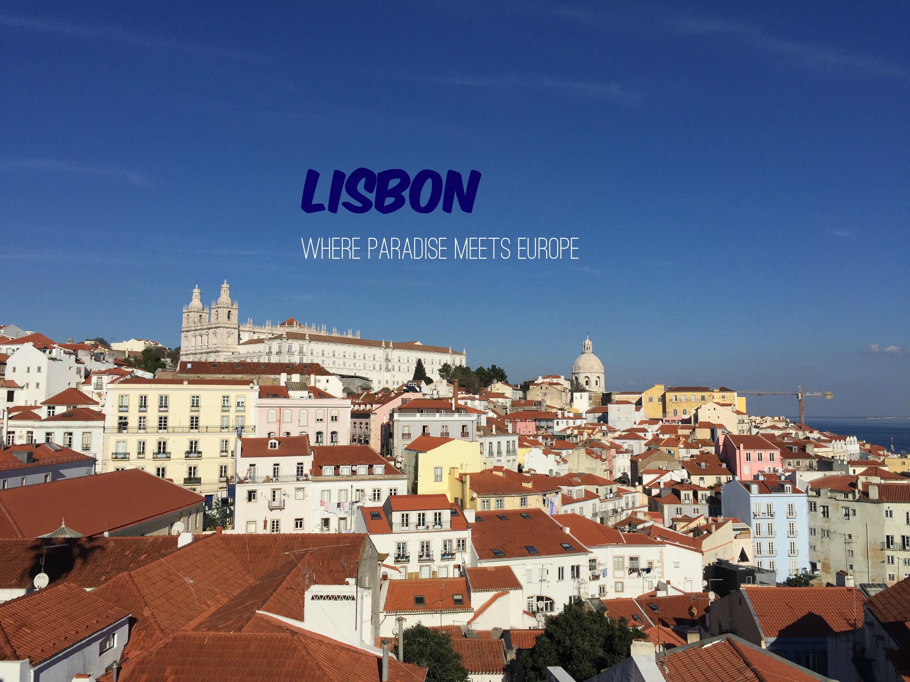

Bem vindo a
Lisboa
Lisboa is the capital of Portugal, a small little country that is most often overlooked by its bigger neighbor, Spain.
Bacon ipsum dolor amet leberkas beef ribs biltong brisket, t-bone strip steak hamburger cupim meatloaf cow fatback tenderloin filet mignon swine rump. Bresaola leberkas flank tail ball tip bacon rump. Pork loin ribeye beef ribs t-bone flank bacon ball tip short ribs pork corned beef chuck ham hock pig shoulder fatback. Chicken ham hock flank tri-tip corned beef doner ground round landjaeger. T-bone strip steak doner, chicken flank alcatra turducken turkey pancetta corned beef ground round pork belly. Meatball pastrami short loin, capicola pig kielbasa pork loin ball tip boudin strip steak chuck shank alcatra corned beef venison. Pork loin meatloaf porchetta, prosciutto pastrami tenderloin frankfurter.
Bacon ipsum dolor amet leberkas beef ribs biltong brisket, t-bone strip steak hamburger cupim meatloaf cow fatback tenderloin filet mignon swine rump. Bresaola leberkas flank tail ball tip bacon rump. Pork loin ribeye beef ribs t-bone flank bacon ball tip short ribs pork corned beef chuck ham hock pig shoulder fatback. Chicken ham hock flank tri-tip corned beef doner ground round landjaeger. T-bone strip steak doner, chicken flank alcatra turducken turkey pancetta corned beef ground round pork belly. Meatball pastrami short loin, capicola pig kielbasa pork loin ball tip boudin strip steak chuck shank alcatra corned beef venison. Pork loin meatloaf porchetta, prosciutto pastrami tenderloin frankfurter.